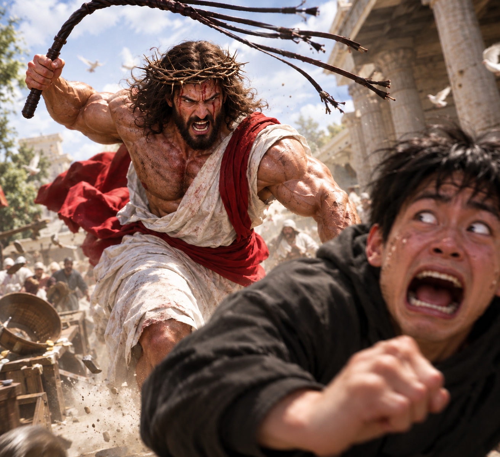

오늘 한번 아라보자
-십일조를 내는 이유는 뭔가여
신명기를 보면 나와있다
신명기 8장 18절
네 하나님 여호와를 기억하라 그가 네게 재물 얻을 능력을 주셨음이라.
신명기 14장 28절
매 삼 년 끝에 그 해 소산의 십분의 일을 다 내어 네 성읍에 저축하여
신명기 14장 29절
너희 중에 분깃이나 기업이 없는 레위인과 네 성중에 거류하는 객과 고아와 과부들이 와서 먹고 배부르게 하라 그리하면 네 하나님 여호와께서 네 손으로 하는 범사에 네게 복을 주시리라
즉 신에게 감사의 의미를 담는것과 동시에 불우이웃을 도우라는 의미로 십일조를 내라 나옴
공동체사회가 짙었기 때문에 다같이 먹고살아라의 의미가 매우 뚜렷함
-그럼 십일조는 꼭 번돈의 10%인가여? 강제할 수 있는건가여?
이는 고린도전서와 고린도후서에 나와있음
고린도전서 16장 2절
매주 첫날에 너희 각 사람이 수입에 따라 모아 두어서 내가 갈 때에 연보를 하지 않게 하라
고린도후서 9장 7절
각각 그 마음에 정한 대로 할 것이요 인색함으로나 억지로 하지 말지니 하나님은 즐겨 내는 자를 사랑하시느니라
꼭 10% 안맞춰도 됨 너 여유로우면 더 내고 힘들면 덜내라
굳이 억지로 혹은 강제로 낼 필요 없고 너가 여유로우면 좀 내라
즉 굳이 무조건 10%씩 낼 필요 없음
대신 불우이웃 돕기 명목으로 여유로울때 좀 내라는 뜻
-에이 교회놈들 다 지 배떼지 채우는데 내기 싫어요. 차라리 기부는 안돼요?
잠언과 히브리서를 보자
잠언 19장 17절
“가난한 자를 불쌍히 여기는 것은 여호와께 꾸어 드리는 것이니 그의 선행을 그에게 갚아 주시리라"
히브리서 13장 16절
“오직 선을 행함과 서로 나누어 주기를 잊지 말라 하나님은 이같은 제사를 기뻐하시느니라”
즉 성경에 나오는 하나님은 굳이 교회에 안해도
"너가 불우이웃 도우는거? 오히려 좋아. 넌 내가 기억했다" 하는 것
그럼 결론은?
목사가 십일조 안낸다고 개지랄 빽빽대면

예수님이 하신대로 채찍질 후려갈기시면 됨

예수가
개새끼들아 너네 씨발 태어난거 여호화 하나님이 태어나게 해주신거야
그리고 가진자(재물이있는자, 부자만이 아닌 소득이 좋아 먹고삶에 불편이 없는자) 새끼들아 씹년들아 재물 쌓는거도 좋은데 가지지않는자(재물의 소득이 뷸분명한 자들) 한테도 돈줘야하니까 너네 재물의 10분지1정도 내서 다같이 으쌰으쌰하자고 씨발년들아
내가 너네를 기억한다니까? 씨발 나못믿어?
를 외쳤는데
한국 : 십일조 딸깍
돈안내면 너 이단
00장로 집사로 강등.
00집사 돈많이냈으니 권사 장로됨 ㅋㅋ